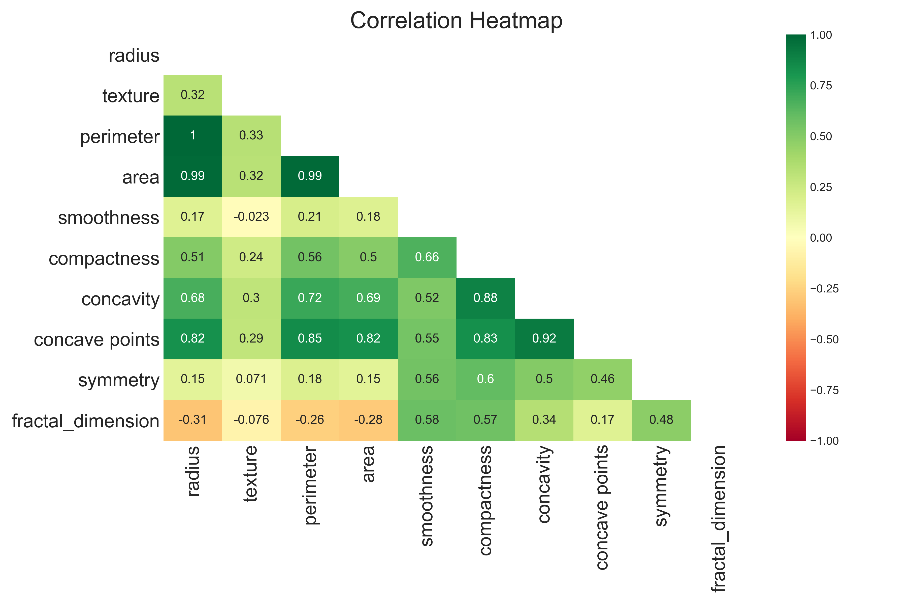
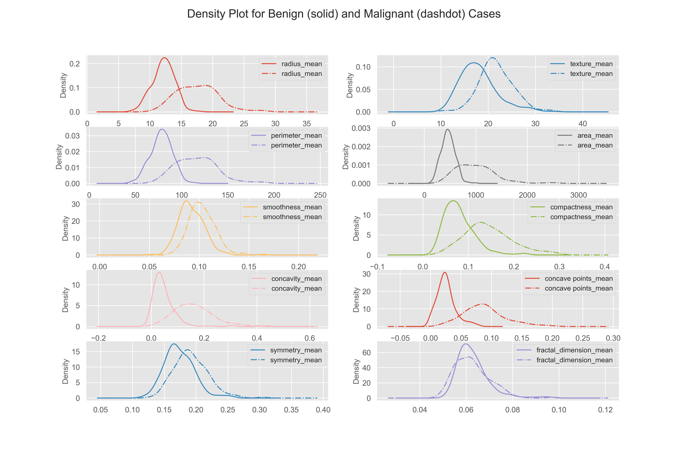
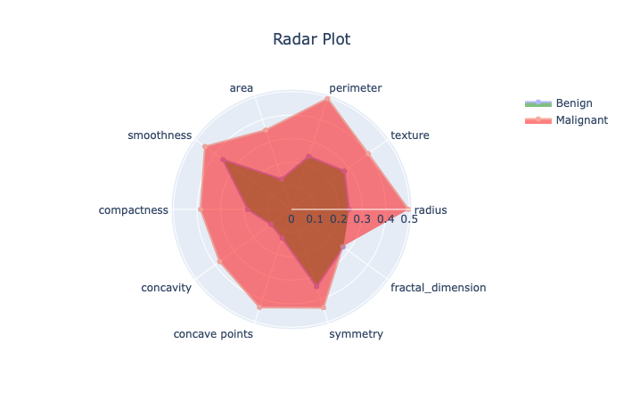
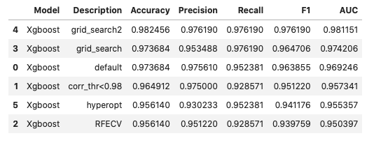
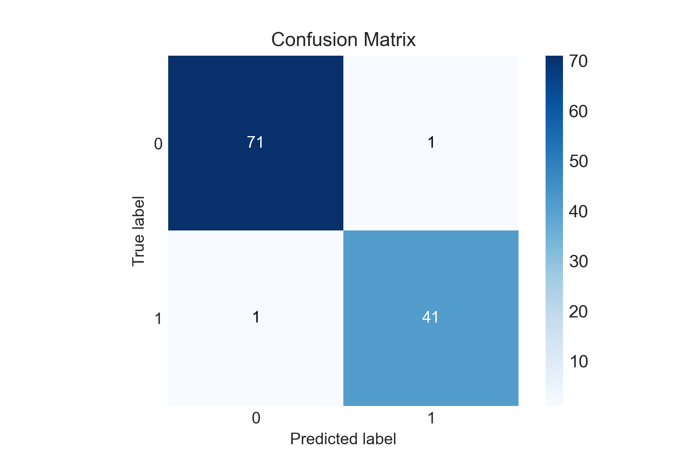
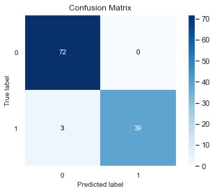

This project uses the data from Wisconsin Cancer Data from UCI Archive. There are 569 samples.
Each sample has id feature and target is diagnosis. The target feature diagnosis is binary with two possible values Benign and Malignant. There are 10 main features with three statitstics: mean, Standard Error, and Worst (mean of top three samples).
The main 10 features are following:
1. radius: mean of distances from center to points on the perimeter
2. texture: standard deviation of gray-scale value.
3. perimeter: sum(l_i) for i=1 to n vertices.
4. area: area of tumor cell
5. smoothness: local variation in radius lengths.
6. compactness: Psquared / A - 1 where P is perimeter and A is area.
7. concavity: Severity of concave portions of the contour.
8. concave points: Number of concave points in the contour.
9. symmetry: Relative difference between two half-planes.
10. fractal dimension: coastline approximation - 1 ([Reference](https://www.kaggle.com/daniboy370/can-ai-outperform-radiologists))
The data look like this:
id diagnosis 10_mean_features 10_SE_features 10_worst_features

Here the density plots of benign and malignant cases are distinct, this means these features are useful for machine learning.

Here, I plotted the spider diagram for benign and malignant cases after min-max normalization of mean features. The figure shows for all the data points, highest values of malignant cases is always larger than that of benign cases. The figures gives tentative representation of benign vs malignant cases in multi-dimensional space.

Here, I used boosting algorithm XGBoost with various feature selection and grid search methods. The various versions of boosting trials and improvements are summariezed below: 

Here, we can see that only two values are misclassified. This means the 10 features extracted by the radiologists from the tumor cell image are highly relevant and extensive feature creation/selection is not much important in this case.
I used keras simple sequential model for the cancel cell image classification. I used simple 3 layer neural network with 8-4-2 units. The important thing to note here is that the chosen THRESHOLD is very high 0.9 instead of usual value 0.5. The data is slightly imbalanced and doing threshold optimization from the traing data I came up with this value. Then for the test data, I got only 3 values missclassified. We should also not that unlike deterministic xgboost model, the Keras model gives different output each time. We can try using fixing seeds of numpy,tensorflow and still due to the internal working of neural nets, we may come up with slightly different results. Here in this run I got 3 values missclassified.

In this binary classification we may have different metrics of evaluations to consider: such as accuracy, precison, recall. The dataset is imbalanced, so accuracy is not a good metric of evaluation to separate different model performances. In this case, classifying a cancer patient as non-cancer is much more severe that classifying non-cancer patient as cancer patient. So, we may consider Precision as the better metric of evaluation.
Precision = TP / (TP + FP)
TP = true cancer classified as cancer
FP = false cancer classified as cancer